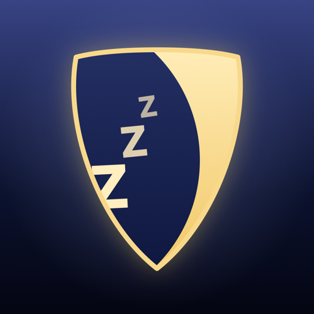

Napíš mi — odpovedám zvyčajne do 48 hodín.
Drop me a line — I usually reply within 48 hours.
jansikuta@me.comÁno. Po spustení nočnej stráže beží nahrávanie aj na pozadí a so zamknutým telefónom. Ak chceš mať displej zhasnutý, ale appku po ruke, použi tlačidlo Stmaviť displej — obrazovka takmer zhasne a ostanú len tlmené hodiny. Telefón odporúčame na noc zapojiť do nabíjačky.
Analýza beží úsporne a ukladajú sa len krátke klipy udalostí, nie celá noc — bežná noc zaberie jednotky MB. Kým je appka na pozadí alebo je displej stmavený, prestane prekresľovať ukazovatele, čo ďalej šetrí energiu. So zapojenou nabíjačkou je spotreba batérie irelevantná.
Telefón zachytil hlasný zvuk, ktorý klasifikátor nevedel pomenovať.
Prehraj si klip, klepni na Nadefinovať zvuk a pomenuj ho. Po
zhruba piatich vzorkách si v Nastavenia → Tréning mojich zvukov
natrénuješ vlastný model my_night.mlmodel priamo v telefóne
a nabudúce appka zvuk rozpozná menom.
Tréning vyžaduje skutočný iPhone — v simulátore nie je framework Create ML dostupný a appka zobrazí upozornenie. Potrebuješ tiež aspoň dve triedy zvukov; ak máš zatiaľ len jednu, appka si druhú („ostatné“) zostaví automaticky z klipov iných udalostí, takže najprv nahraj aspoň jednu noc.
Nie. Appka hľadá dlhšie ticho medzi úsekmi počuteľného dýchania — mikrofón nemeria prietok vzduchu ani okysličenie, takže nerozlíši tiché dýchanie od zástavy dychu. Je to orientačná heuristika a Zzzentinel nie je zdravotnícka pomôcka. Ak sa pauzy opakujú, spomeň ich svojmu lekárovi — pomôže ti v tom Súhrn pre lekára.
V detaile ukončenej noci → Zdieľať → Súhrn pre lekára vznikne PDF s odborne formulovaným prehľadom (chrápanie, počuteľné dýchanie, zoznam páuz, sekcia „Metóda a obmedzenia“) a nahrávky okolia troch najdlhších páuz. Nič sa neodosiela — súbory zdieľaš sám. Nie je to diagnóza; je to podklad na rozhovor s lekárom.
Zvuky, ktoré appka počula prvýkrát, alebo si nimi nie je istá, ti v rannom reporte ponúkne na vypočutie. Sedí ju naučí, že sa trafila; Opraviť jej dá správny názov a novú tréningovú vzorku. Na každý zvuk sa pýta najviac dvakrát za noc a po troch potvrdeniach mu už verí. Návrh sa nikdy sám nezmení na fakt. Automatické návrhy zvukov, ktoré vstavaný rozpoznávač nepozná, vypneš v Nastavenia → Návrhy zvukov.
Aplikácia pre hodinky sa nainštaluje automaticky spolu s tou v telefóne. Na hodinkách klepneš na Aktivovať — strážca sa zapne inkognito, displej telefónu zostane zhasnutý. Vypnutie prebieha cez PIN klávesnicu priamo na hodinkách. Ak je telefón mimo dosahu, príkaz na aktiváciu sa zaradí do fronty a vykoná sa, keď sa zariadenia spoja. Rovnako funguje Siri („Arm Zzzentinel“), widget Skratky aj zadné poklepanie na telefón (Nastavenia → Prístupnosť → Dotyk → Klepnutie na zadnú stranu).
V Nastavenia → Tréning mojich zvukov → Prenos vzoriek klepni na Exportovať všetky vzorky (.zip) a ulož si ich (Súbory, AirDrop, iCloud). V druhom zariadení zip rozbaľ a cez Importovať vzorky zo Súborov vyber nahrávky jedného zvuku naraz a zadaj jeho názov. Natrénovaný model prenesieš tlačidlom Exportovať my_night.mlmodel a v cieľovej appke cez Importovať model (.mlmodel). Všetky dáta appky nájdeš aj priamo v aplikácii Súbory → V mojom iPhone → Zzzentinel, odkiaľ si ich vieš skopírovať či zálohovať.
iOS považuje premenovanú aplikáciu za samostatnú, takže si dáta neprevezme automaticky. V starej aplikácii použi jej exportné tlačidlá (model, prípadne jednotlivé nahrávky cez zdieľanie), ulož ich do Súborov a v Zzzentineli ich naimportuj. Starú aplikáciu odinštaluj až potom, čo si overíš, že import prebehol — odinštalovaním sa jej dáta nenávratne odstránia.
Ak je strážca vypnutý, PIN zmeníš v záložke Strážca → Zmeniť PIN. Ak je aktívny a PIN si zabudol úplne, jedinou cestou je preinštalovanie aplikácie — nočné záznamy sa pritom zo zariadenia odstránia, preto si ich exportuj vopred.
Aktivovaný strážca sleduje pohyb telefónu aj hlasitosť zvuku okolo neho — niekto sa k telefónu často prihne alebo naň prehovorí skôr, než ním pohne. Nič sa pritom nenahráva, meria sa len okamžitá hladina zvuku. Ak si v spoločnej izbe alebo na internáte, v Nastaveniach vypni Spustiť alarm aj pri zvuku — alarm potom spustí len pohyb.
Obrazovka bliká 2× za sekundu a blesk 2,5× — obe pod hranicou, ktorú odborné odporúčania označujú za rizikovú. Ak máš v systéme zapnuté Obmedziť pohyb, blikanie sa vynechá automaticky. Vypnúť sa dá aj ručne v Nastavenia → Guard Extra Plus → Blikanie pri alarme; siréna zostane funkčná.
Pred aktiváciou strážcu vytoč hlasitosť médií na maximum a vypni režim Nerušiť. Alarm hrá cez reproduktor aj pri stlmenom prepínači zvonenia.
Všetko je uložené len v telefóne. Jednotlivé noci vymažeš potiahnutím doľava v zozname Moje noci, natrénované zvuky v Tréningu mojich zvukov. Odinštalovaním aplikácie sa odstráni všetko.
Yes. Once the night watch is running, recording continues in the background and with the phone locked. Use Dim screen to keep the app open with an almost-black display showing only a dim clock. We recommend charging the phone overnight.
Analysis is lightweight and only short event clips are stored, not the whole night — a typical night takes a few MB. While the app is in the background or dimmed, it stops redrawing meters to save more power.
A loud sound the classifier couldn't name. Play the clip, tap
Define sound and name it. After about five samples you can train
your personal my_night.mlmodel in Settings, right on the
phone.
Training requires a real iPhone — Create ML is unavailable in the Simulator. You also need at least two sound classes; with only one, the app builds an "other" class automatically from other recorded clips, so record at least one night first.
No. The app looks for longer silences between stretches of audible breathing — a microphone measures neither airflow nor oxygen, so it cannot tell quiet breathing from a stop in breathing. It's an indicative heuristic and Zzzentinel is not a medical device. If pauses recur, mention them to your doctor — the Clinician summary helps with that.
In a finished night → Share → Clinician summary the app writes a PDF with a professionally-worded overview (snoring, audible breathing, list of pauses, a “Method and limitations” section) plus recordings surrounding the three longest pauses. Nothing is uploaded — you share the files yourself. It is not a diagnosis; it is material for a conversation with your doctor.
Sounds the app heard for the first time, or isn't sure about, are offered for a listen in the morning report. That's right teaches it that it was right; Fix gives it the proper name and a new training sample. It asks about each sound at most twice a night and trusts it after three confirmations. A suggestion never turns into a fact on its own. Automatic suggestions for sounds the built-in recognizer has no name for can be turned off under Settings → Sound suggestions.
The watch app installs automatically alongside the iPhone app. Tap Arm on the watch and the guard arms incognito — the phone's screen stays dark. Disarm with the PIN pad on the watch. If the phone is out of range, the arm command is queued and runs once the devices reconnect. Siri ("Arm Zzzentinel"), a Shortcuts widget and Back Tap work the same way.
In Settings → My sound training → Transfer samples tap Export all samples (.zip) and save it (Files, AirDrop, iCloud). On the other device unzip it and use Import samples from Files, one sound at a time, giving each its name. A trained model moves via Export my_night.mlmodel and Import model (.mlmodel). All app data is also reachable in Files → On My iPhone → Zzzentinel.
iOS treats a renamed app as a separate one, so data doesn't carry over automatically. In the old app use its export buttons (the model, or single recordings via Share), save them to Files and import them in Zzzentinel. Uninstall the old app only after checking the import worked — uninstalling removes its data for good.
If the guard is off, change it in Guard → Change PIN. If it's armed and the PIN is lost, reinstalling the app is the only way — night data on the device is removed, so export first.
An armed guard watches for movement and follows the loudness of sound around the phone — people often lean over a phone or talk to it before they move it. Nothing is recorded; only the momentary sound level is measured. In a shared room, turn off Sound can trigger the alarm in Settings and only movement will set it off.
The screen flashes twice a second and the flashlight 2.5 times — both below the threshold guidance considers risky. Flashing is skipped automatically when Reduce Motion is on, and can be turned off in Settings → Guard Extra Plus. The siren still works.
Before arming the guard, turn media volume all the way up and switch off Do Not Disturb. The alarm plays through the speaker even with the ring/silent switch muted.
Everything is stored on the phone only. Swipe left to delete a night in My nights, or a sound in My sound training. Uninstalling the app removes everything.